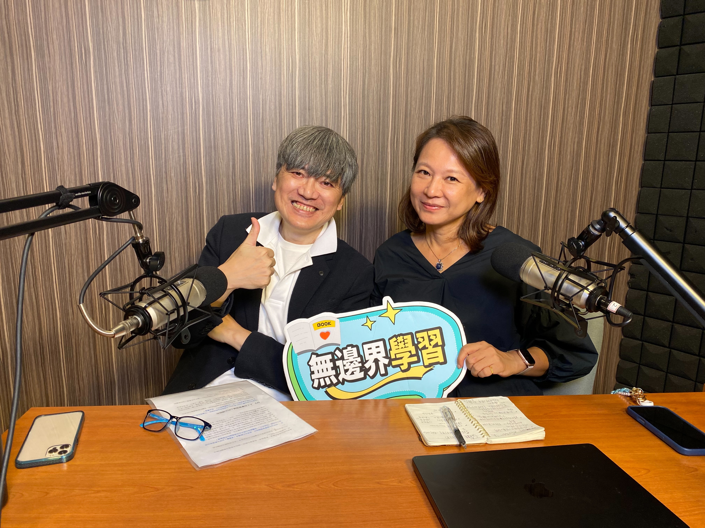

從遊戲產業走進教學現場：因材施教的邏輯啟蒙
小剛老師擁有 24 年遊戲產業經驗，八年前，他因緣際會受邀指導董事總經理的孩子進行程式面試，沒想到這場挑戰不僅順利達標，學生更在短短數月內開發出 App 並在貓咪盃比賽中獲得佳績。從此，這份口碑效應讓他投身教育，從最初面對面的教學延伸至線上，將經驗帶給更多海外與國內的孩子，課程內容也從 Scratch 一路延伸至高階的 C++ 與 APCS 考試。

拆解性別框架：看見科技女力的邏輯天賦
過去常有一種刻板印象，認為理工與資訊領域是男生的強項。然而，小剛老師在教學現場觀察到，這項傳統正在迅速鬆動。以北一女中為例，不僅資訊教育普及，學生更具備架設線上教學系統的能力。在他的學生群體中，男女比例已趨於均衡，許多優秀女孩不僅在邏輯思考上表現出色，更錄取了加州大學柏克萊分校（UC Berkeley）與杜克大學（Duke）等頂尖學府。這種轉變印證了天賦與邏輯潛力，早已超越了性別框架。
課堂鐵律：不給答案，是為了讓孩子自己找到解法
「我的課堂上有一個鐵律：跟老師要答案，絕對沒有答案。」小剛老師直言，統一教材容易讓學習節奏不一，因此他主張「因材施教」。每位學生的思考路徑不同，有的習慣紙筆推算，有的喜歡腦內抽象建模。針對這些差異，他設計了兩個核心引導法：
- 筆記本記錄法：每當學生犯錯，就在筆記本畫下方框，透過視覺化的積累，讓孩子親眼看見盲點，進而自我修正。
- 引導式填空：初期示範九成內容，剩下的一成留給學生填補，隨著學習進度逐步調整比例，直到孩子能完全自主解題。
當學生成功解開難題，喊出那一聲「AC（Accepted）！」時，那份自我突破的喜悅，正是學習熱情最好的燃料。
程式與數學的關聯：邏輯是面對未來的萬能鑰匙
常有家長詢問：「孩子數學不好，能學好程式嗎？」小剛老師認為，程式設計的基礎其實很純粹，只需基本的算數邏輯與觀察力。程式與數學並非對立，而是相輔相成。他從不要求學生死背公式，而是帶領他們從邏輯出發，「解構」公式的邏輯由來。當孩子學會觀察問題、系統化分析並推導結果時，這種處理事務的邏輯框架，才是他們面對未來挑戰時，真正能帶著走的獨立思考能力。
延伸探索：社團法人 1221 未來教育發展協會官網 ↗ ｜ 《無邊界學習》主持人江宜汾個人網頁 ↗
分享這篇文章
把這場教育對話，分享給你在乎的人：FB 分享 ｜ IG ｜ Dcard ｜ LINE 分享 ｜ 抖音 ｜ 痞客邦 ｜ 文章永久連結
分享這篇文章
把這場教育對話，分享給你在乎的人。
FB 分享說明：已同步複製文章標題、摘要與連結；若 Facebook 視窗讀取較慢，可直接貼上發布。
直接開啟 Facebook 貼上分享 ↗IG 分享說明：已自動複製文章標題、摘要與連結，請開啟 Instagram 貼到限時動態、貼文或個人簡介分享。
開啟 Instagram（另開視窗） ↗Dcard 分享說明：已自動複製文章標題、摘要與連結，請開啟 Dcard 貼到看板新文章或留言分享。
開啟 Dcard（另開視窗） ↗抖音分享說明：已自動複製文章標題、摘要與連結，請開啟抖音／TikTok 貼到圖文、影片文案或個人簡介分享。
開啟抖音 / TikTok（另開視窗） ↗痞客邦分享需登入後自行發文：將標題與連結貼到新文章，再確認發布。
開啟痞客邦（另開視窗） ↗